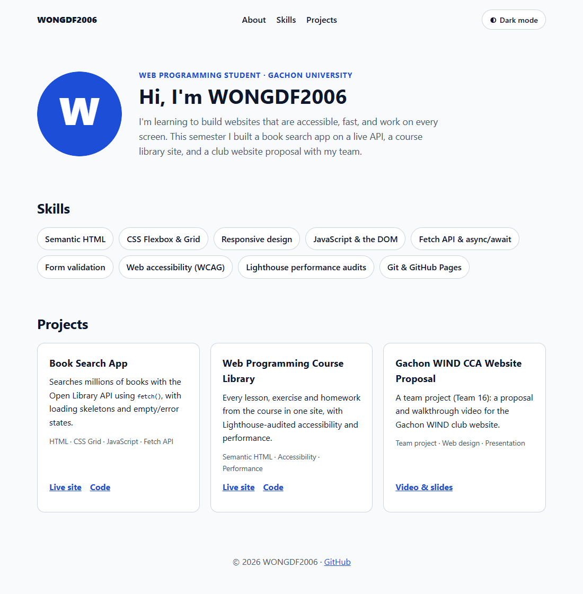

Homework · portfolio repository
A personal portfolio repo with an index.html that has my name, a photo, a bio, skills, and links to course projects,
built in at least 5 meaningful commits.
| GitHub repo | https://github.com/WONGDF2006/portfolio |
| GitHub Pages | https://wongdf2006.github.io/portfolio/ |

Commits
Each commit is one real step. The mobile fix came from measuring: before it, the page was 492 px wide on a 390 px phone.
b78c3ab Add dark mode toggle that remembers the visitor's choice
54c8b1f Fix mobile layout: stack the hero and let project cards wrap
438e49d Add project cards for three course projects
b581fce Add skills section
bcd29c9 Add hero section with name, profile picture and short bio
29e1c7a Add page skeleton with header, navigation, main and footerContents
| Name | WONGDF2006 |
| Photo | A placeholder "W" picture (images/avatar.svg). Replace it with a real photo. |
| Bio | A short bio about this semester's work |
| Skills | Nine skills covered in the course |
| Projects | Book Search App, Course Library, Gachon WIND CCA proposal |